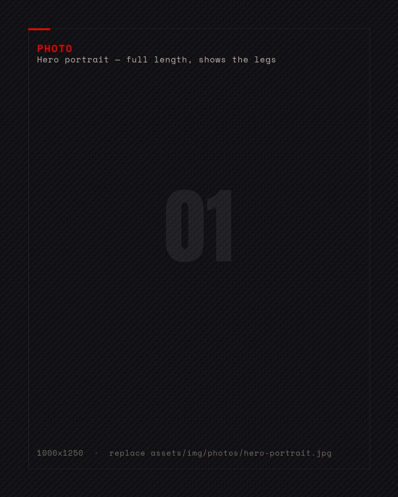

Singer · Model · Hyperpolyglot · Explorer
RAMONA IRGOLIČ
SINGS IN 50 LANGUAGES
I learn a language by singing it first and understanding it later. Ten countries have been home, eighty more have been explored, and I am nowhere near finished.
Scroll

Ramona
Irgolič
Side A · 33⅓
Irgolič
Side A · 33⅓
80+
Countries explored
50
Languages sung in
124cm
Legs · measured twice
10
Countries called home
Four worlds,
one woman
/01 — PICK A DOOR
01 / VOICE
The Singer
From Brazilian clubs with Adriana Deffenti to touring Asia with The Platters — and twice on Singapore's biggest stage, the Esplanade.
Enter → 02 / WORLDThe Explorer
80 countries explored, 10 called home. A tour guide in Norway who switched between 13 languages in a single day.
Enter → 03 / RECORDThe Model
Milan runways, Las Vegas pageants, a Bond film set — and legs measured twice at 124 centimetres.
Enter → 04 / MINDThe Polyglot
HYPIA member No. 420. Fluent in 10 languages, learning through melody: she sings a tongue before she understands it.
Enter →Maybe not every language sounds beautiful when you speak it. But every single one is beautiful when you sing it.— Ramona Irgolič · 24ur, March 2025
01 / 16